Using OpenStreetMap data in QGIS
Keith Jenkins
Keith Jenkins
GIS Librarian
Cornell University
This talk was inspired by Metro Extracts
R.I.P.
Mapzen
(2013-2018)
"Using OpenStreetMap data"
visualizing or analyzing
(not editing)
Why OSM?
Open data
many sites and tools for getting OSM extracts
Most complete street map of the world
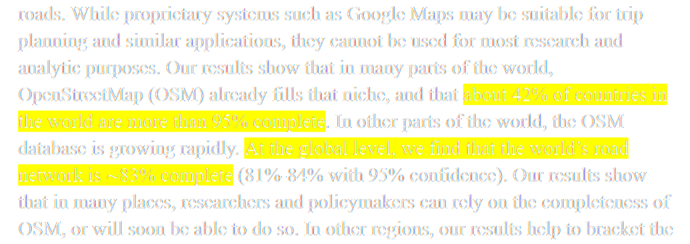
Also, OpenStreetMap is more than just streets...
building outlines, waterways, railroads, trails, placenames, schools, banks, churches, mosques, temples, libraries, museums, hospitals, fire stations, forests, cemeteries, gardens, shops, offices, swimming pools, playgrounds, tennis courts, sports fields, and much more
OSM License and Copyright
The Elements of OSM
nodes, ways, tags, relations
Nodes (points)
Ways (lines, polygons)
Tags (attributes)
building=yes
building=house
building=commercial
highway=primary
highway=residential
highway=footway
TagInfo provides tag usage statistics
Relations
Data Formats
.osm
OSM XML
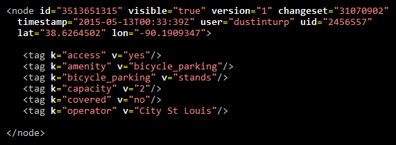
.pbf
Protocolbuffer Binary Format
Conversion tools
ogr2ogr osm2pgsql imposm osmosis osmium etc.
Getting OSM data
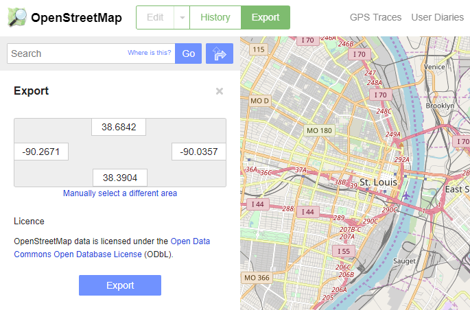
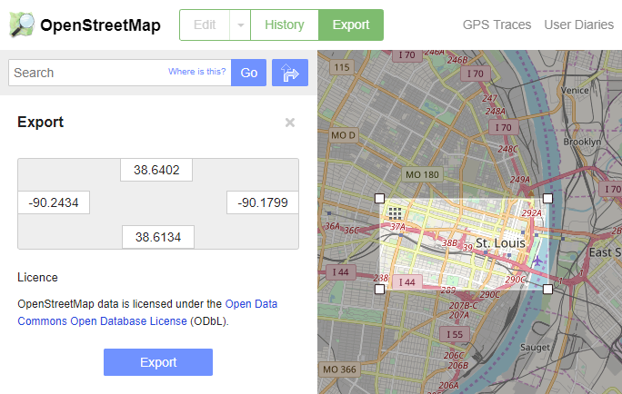
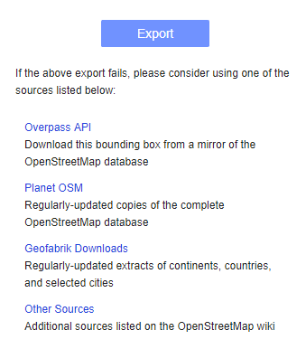
Adding OSM data to QGIS
Add directly from .osm and .pbf file
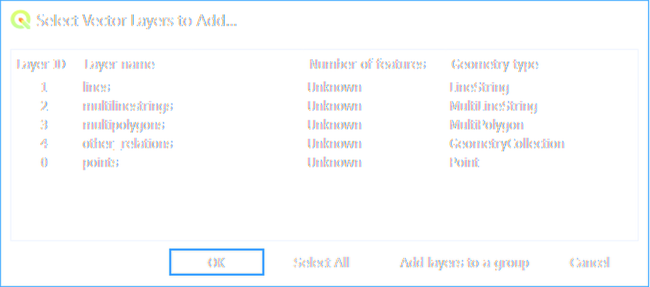
some rendering and stability issues when accessing .osm/.pbf directly
convert to .gpkg or .sqlite (or .shp)
ogr2ogr -f "GPKG" "D:/test/output.gpkg"
"D:/test/input.osm"
ogr2ogr -f "SQLite" -dsco SPATIALITE=YES
"D:/test/output.sqlite" "D:/test/input.osm"
ogr2ogr will create separate layers for points, lines, polygons
ogr2ogr splits several common tags into separate columns
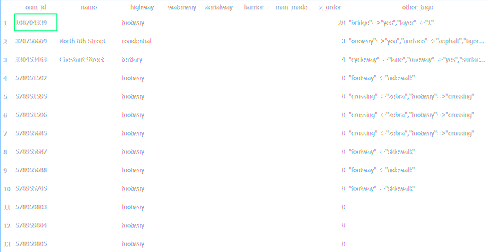
POLYGONS
name, type, aeroway, amenity, admin_level, barrier, boundary, building,
craft, geological, historic, land_area, landuse, leisure, man_made,
military, natural, office, place, shop, sport, tourism
LINES
name, highway, waterway, aerialway, barrier, man_made
POINTS
name, barrier, highway, ref, address, is_in, place, man_made
Columns can be customized by editing GDAL's osmconf.ini file
If this sounds complicated,
don't worry!
QGIS Plugins make everything easier.
QGIS Plugins QuickMapServices QuickOSM OSMDownloader
QuickMapServices plugin
Basemap images from various online providers
Settings > More Services > Get contributed pack
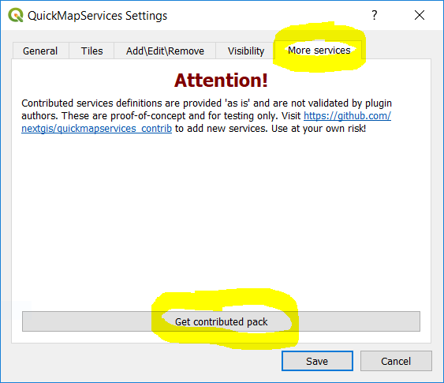
OpenStreetMap Standard
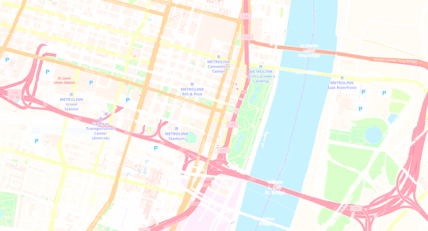
Mapbox Gray
Stamen Toner
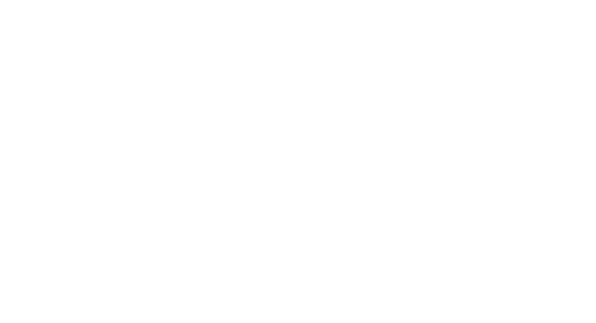
Stamen Watercolor
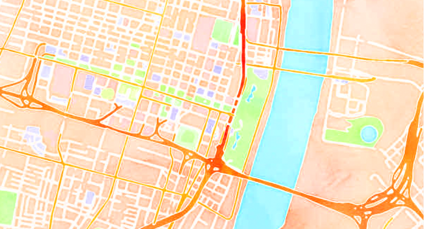
QuickOSM plugin
Import OSM features for a specific area
Search for specific tags
Can also import from .osm or .pbf file
OSMDownloader plugin
Download all OSM features within a bbox
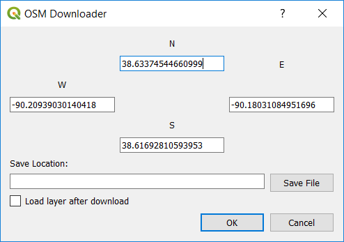
OSMInfo
plugin
(QGIS 2.x only)
Click map to fetch OSM feature info
Various QML files can get you starting defining styles based on the OSM tags
Websites offering OSM extracts
download by country/state
.osm .pbf .shp
updated daily
separate layers for buildings, landuse, natural, places, roads, railways, water areas, waterways, etc.
v3 April 2017
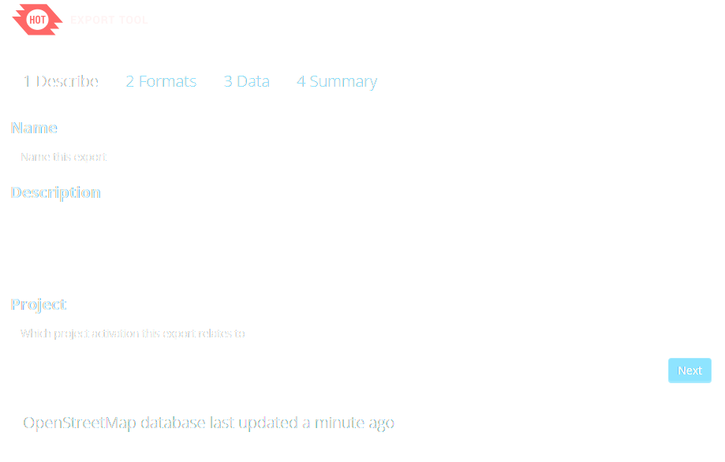
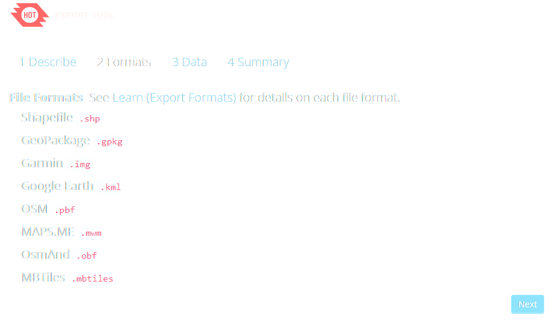
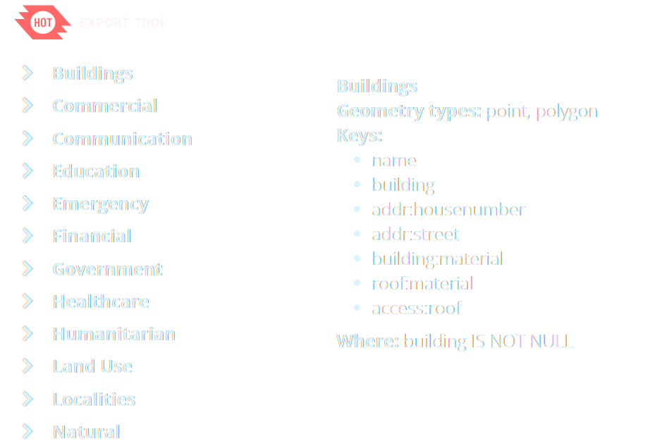
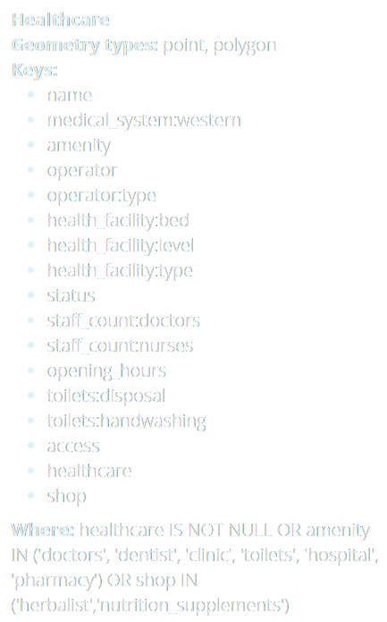
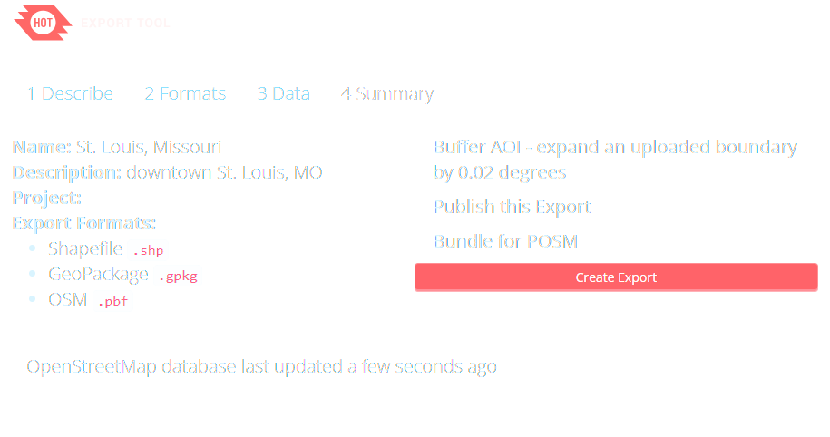
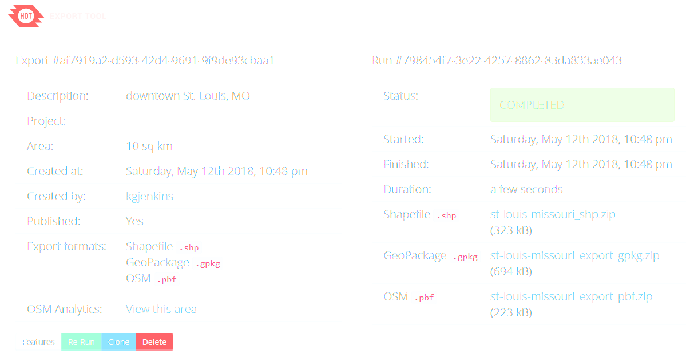
HOT Exports are split into point, line, polygon layers
Best to select just one "theme" at a time
Nextzen has snapshots from Jan 29, 2018
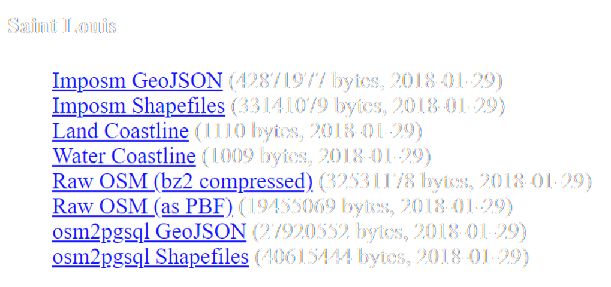
imposm splits features into thematic groups like amenities, buildings, roads, etc.
osm2pgsql splits features into point, line, polygon layers
If you are interested in OSM + PostGIS...
Comments or questions?
kgj2@cornell.edu
@kgjenkins